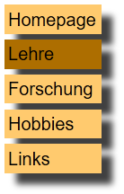

Webpublishing
Dr. Benjamin Zapilko
Einleitung
Diskussion
- Wie gut kennen Sie das Web?
- Was ist das Web?
- Wie funktioniert das Web?
- Was könnte man in Webpublishing so alles lernen?
Inhalte und Konzept
- Webpublishing als Grundlage der Webtechnologie.
- Inhalte weitgehend offen und auf praktische Übung fokussiert.
- Überblick über technische Grundlagen des Web sowie serverseitige Programmierung und Content Management Systeme
- Praktischer Umgang mit Werkzeugen zur Erstellung von Websites
- Hoher Anteil an eigenverantwortlichem Lernen und Üben.
Codecademy
- Registrieren Sie sich auf Codecademy: https://www.codecademy.com
- Verschiedene Online-Kurse zum selbständigen Lernen.
- Diese Veranstaltung integriert den Kurs HTML & CSS.
- Teilweise auch relevant, bzw. zur Vertiefung: JavaScript, jQuery, PHP
- Auf konkrete Einzelmodule wird in diesem Skript eingegangen.
Formales
Prüfung
- Prüfung als Projektarbeit (Gruppen bis 3 möglich)
- Thema der Projektarbeit weitgehend frei, z.B.:
- Prototypische Umsetzung einer Website
- Implementierung einer Zeitschrift in Wordpress
- Entwicklung einer Webanwendung
- …
- Ihr Thema wählen Sie zur Mitte des Semesters.
- Abgabe und Präsentation: 23. Januar 2017 (letzter Termin)
Abgabe
Bestehend aus:
- Ihrem Projekt,
- Ihrer Ausarbeitung und
- ggf. der Präsentation.
Abgabe über Moodle in einem ZIP-File.
Struktur des ZIP-Files
vorname-nachname.zip:
- /vorname-nachname
- vorname-nachname-ausarbeitung.pdf ← Ihre Ausarbeitung
- vorname-nachname-folien.pdf ← Ihre Präsentation
- /htdocs ← Ihr Projekt
- /database ← Datenbankexport
Ausarbeitung
- Dokumentation Ihres Projekts.
- Kurz fassen, eventuell reichen 3-5 Seiten. Viel mehr als 10 Seiten (ohne Bilder) sollten es auf keinen Fall sein.
Typische Struktur der Ausarbeitung
- Kurzbeschreibung Ihres Projekts.
- Beschreibung der Abgabe:
- Was muss wo hin? (Insbesondere, wenn es vom Standard abweicht)
- Welche Datenbanken braucht das Programm, was muss alles laufen?
- Welche Ordner enthalten was, wie haben Sie Ihr Projekt auf Dateiebene organisiert.
- Beschreibung der Website (Screenshots), bzw. bei größeren Projekten der wichtigsten Teile.
- Ausblick und mögliche Erweiterungen.
Präsentation
- 10 Minuten(!), die Zeit ist strikt einzuhalten.
- Folien sind als PDF abzugeben.
- Es kann gerne auch ohne Folien nur das Projekt präsentiert werden oder eine Mischung aus beidem.
- Präsentation auf eigenem oder Studiengangslaptop, vorher Anschluss an den Projektor testen und alles vorbereiten!
- Inhalt: Ihr Projekt. Sie können Schwerpunkte setzen: was ist am interessantesten, was war am schwersten, …
Ihr Projekt
- Enthält ihren Hauptordner mit allen Unterordnern, so dass das Projekt in XAMPP läuft, wenn es unterhalb von htdocs kopiert wird.
- Bei Wordpress oder Dokuwiki kann der Ordner eventuell woanders sein, z.B. unter xampp/apps/wordpress/htdocs
- Läuft ihr Projekt in einem Unterordner von htdocs, dann brauchen Sie nur diesen Ordner im Zip-File unter htdocs abzulegen.
- Generell bitte nur Dateien und Ordner abgeben, die etwas mit Ihrem Projekt zu tun haben.
- PHP-Code oder ggf. auch HTML-Code bitte gut kommentieren, damit verständlich wird, was Sie da gemacht haben.
Datenbankexport
- phpMyAdmin → Export → Ok → Datei abspeichern.
- Textdatei (mit der Endung .sql), die alle SQL-Anweisungen enthält, um die Datenbank neu aufzusetzen.
Statischer Abzug
Siehe Abschnitt Zurück zur statischen Website.
Termine
Übersicht
| 1 | Einführung, HTML Grundlagen | |
| 2 | Aufbau einer Website | |
| 3 | Praxisprojekt: Eine eigene Website | |
| Ausfall | ||
| 4 | CSS | |
| 5 | Serverseitige Programmierung | |
| 6 | Zwischenpräsentationen, Fragestunde | |
| Ausfall | ||
| 7 | GitHub, Content Management Systeme | |
| 8 | Content Management Systeme | |
| 9 | Datenbankabfragen in PHP | |
| 10 | Freies Arbeiten | |
| 11 | Freies Arbeiten | |
| Präsentationen |
Skript
Dieses Skript wird ständig aktualisiert und ist hier abrufbar:
http://www.wisslab.org -> Teaching
Bitte möglichst nicht ausdrucken, bzw. erst am Ende der Veranstaltung.
Zeichenerklärung
- ↵ - Damit sind Zeilenumbrüche gekennzeichnet, die in Wirklichkeit nicht existieren, sondern nur wegen des begrenzten Platzes im Skript oder auf den Folien eingefügt werden mussten. Als Beispiel bei der angabe einer URL:
http://www.hdm-stuttgart.de/~eckert/dasisteinsehrlanger ↵
verzeichnisname
Werkzeuge und Dokumentation
Werkzeuge
Windows Einstellungen
- Win 8/10: Explorer-Optionen (Systemsteuerung -> Darstellung)
- Win 7: Ordneroptionen (Systemsteuerung)
- Reiter: Ansicht
- "Erweiterung bei bekannten Dateitypen ausblenden" ausschalten.
Der Editor
Anforderungen:
- Unterstützung für Windows und Unix Zeilenenden - deswegen kommt der Winwdows Texteditor (Notepad) nicht in Frage.
- Unterstützung für verschiedene Zeichencodierungen, vor allem Unicode.
- Unterstützung von Syntax Highlighting - hier für HTML, CSS und JavaScript.
Unter Windows empfohlen: Notepad++, EmEditor
Alternativen (auch für Mac): Sublime Text, Atom, Emacs, Vim
Der Webbrowser
Entwicklerwerkzeuge / Firebug
- Firefox Entwicklerwerkzeuge (Strg-Umschalt-I)
- Chrome Developer Tools (F12)
- Alternativ: Firebug (Erweiterung für Firefox)
Codebeautify
http://codebeautify.org/htmlviewer
- Ein einfacher Online-Editor, um im Browser HTML zu erstellen.
- Ausgabe direkt neben dem Code (Run drücken)
- Einfache Beautify-Funktion zum automatischen Einrücken des HTML-Codes.
- Möglichkeit, erstellten Code mit anderen zu teilen.
JSFiddle
- Online-Editoren für HTML, CSS und JavaScript.
- Auch hier direkte Ausgabe im Browser.
- Noch bessere Funktionen zum Teilen und gemeinsamen Arbeiten.
- Direkte Einbindung beliebter Bibliotheken (z.B. jQuery).
Dokumentation
HTML 5 Validator
- Validiert HTML-Code anhand einer URL, einer hochgeladenen Datei oder aus einem Textfeld.
- Meldungen sind gerade für Anfänger nicht immer leicht zu verstehen.
- Aber mit zunehmender Erfahrung leichter zu nutzen und unverzichtbar als Test für die eigene Seite.
SelfHTML
- Umfangreiche deutschsprachige HTML-, CSS- und JavaScript-Referenz.
- Möglichkeit, die Beispiele direkt zu bearbeiten ("Frickln").
- Gute Tutorials.
HTML 5 Spezifikation
W3C Specification: http://www.w3.org/TR/html5
WHATWG Specification: https://whatwg.org/html
- Technische und sehr formale Beschreibung von HTML, aber im Zweifel maßgeblich dafür, was "korrekt" ist.
- Schwer zu lesen, aber trotzdem sollte man da ab und zu reinschauen, entweder, um Unklarheiten zu beseitigen oder einfach aus Neugier, wie etwas im Standard beschrieben ist.
HTML Grundlagen
Übung: HTML Basics
Bearbeiten Sie das Modul "HTML Basics"
HTML Schnelleinstieg
HTML (Hypertext Markup Language) ist eine Auszeichnungssprache für das World Wide Web. Sie gibt den Inhalten Struktur und bestimmt, wie die Inhalte im Browser dargestellt werden.
<h1>Hello World</h1> <!-- Heading 1 -->
<p> <!-- Paragraph -->
<b>Fetter Text! (bold)</b>
</p>
<p>
<i>Kursiver Text (italics)</i>
</p>
<p>
Ganz normler Text geht natürlich auch!
Oder auch ein Bild:
</p>
<img src="https://www.hdm-stuttgart.de/stylesheets_bilder/Logo_Graustufen_1.gif"/>
Und so sieht das dann im Browser aus:
Das HTML Grundgerüst
Das war schon mal der Inhalt, aber eine vollständige, gültige HTML-Seite braucht noch etwas mehr Struktur außenrum:
<!DOCTYPE html>
<html>
<head>
<title>Internetsuchmaschinen 1: Das Seminar</title>
<meta charset="UTF-8" />
<meta name="description" content="Das ultimative Seminar zu Suchmaschinen."/>
</head>
<body>
... Und hier kommt dann der eigentliche Inhalt.
</body>
</html>
HTML/XML Grundlagen
HTML basiert auf XML (Extensible Markup Language). Inhalte werden durch Tags (<html>, <h1>, …) strukturiert.
Ein Tag besteht …
- entweder aus einem öffnenden und schließenden Teil:
<p>Inhalt des Absatzes</p>
- oder steht für sich allein, was durch einen Slash am Ende gekennzeichnet ist:
<br /> <!-- Ein Zeilenumbruch, break -->
Das letzte Beispiel enthält einen Kommentar, der immer zwischen <!-- und --> eingschlossen ist.
Ein Tag kann Attribute und/oder Inhalt enthalten:
- Ein Bild mit einem alternativen Text:
<img src="logo.gif" alt="Das ist ein Logo" />
- Ein Bereich (division) mit Breitenangabe und Inhalt:
<div style="width:200px">Hier steht der Inhalt</div>
Auch Links zu anderen Seiten werden so gebildet. Hier ist ein Link auf die HdM Website:
<a href="http://www.hdm-stuttgart.de">HdM Stuttgart</a>
Das könnte dann z.B. so dargestellt werden: HdM Stuttgart
Schließlich muss man noch wissen, dass die HTML-Tags in einer baumförmigen Hierarchie angeordnet sind:
<html>
<head>
...
</head>
<body>
<div>
<p>
<h1>Ich bin ein Ast im Baum!</h1>
</p>
</div>
<div>
<p>Auch ein Ast.</p>
</div>
</body>
</html>
Damit lassen sich auch Pfade zu allen Knoten angeben, die <h1>-Überschrift also mit:
/html/body/div[1]/p/h1
<html>
<body>
<div>
<p>
<h1>Ich bin ein Ast im Baum!</h1>
</p>
</div>
</body>
</html>
/html/body/div[1]/p/h1
Dieses hierarchische Modell eines Dokuments bezeichnet man als Document Object Model (DOM), der Baum mit den einzelnen Tags wird entsprechend auch als DOM Tree bezeichnet.
Übung: Erste Seite
Basteln Sie Ihre eigene Webseite. Im Web finden Sie dazu geeignete Online-Editoren zum einfachen ausprobieren, z.B. http://codebeautify.org/htmlviewer.
Halten Sie eine HTML-Referenz parat, damit Sie nachschauen können, was ein Tag bedeutet. Recht übersichtlich ist z.B. http://wiki.selfhtml.org/wiki/HTML. Dort können Sie bei vielen Tags nicht nur ein Beispiel live ansehen, sondern die Beispiele auch gleich bearbeiten (unter 'frickln').
- Erstellen Sie einen kleinen Blog-Artikel, der Überschrift, Autoreninformation, Datum der Veröffentlichung, einen Anreißtext und den vollen Artikeltext enthält. Denken Sie an das Gerüst der HTML-Seite. Eine Vorlage zum Kopieren finden Sie z.B. im Selfhtml Wiki unter 'Grundstruktur'.
- Fügen Sie eine Tabelle hinzu.
- Validieren Sie Ihre Webseite, beheben Sie die angezeigten Fehler. https://html5.validator.nu/
Was fehlt hier noch?
Das war natürlich erst der Anfang, so geht es weiter:
- Die optische Darstellung einer Webseite wird zum großen Teil außerhalb des HTML-Codes definiert, in sogenannten Cascading Stylesheets (CSS).
- Dynamik auf der Seite (z.B. Benachrichtigungen und Effekte) entwickelt man in JavaScript, einer Programmiersprache, die direkt im Browser ausgeführt wird.
- Einzelne Seiten werden normalerweise nicht von Hand erstellt, sondern entweder mit Content Management Systemen verwaltet oder dynamisch auf dem Server erzeugt, meistens basierend auf einer Datenbank.
Aufbau einer Website
Übung: Build Your Own Webpage
Bearbeiten Sie das Modul "Build Your Own Webpage"
Wiederholung: Bilder und Links
TODO: Beispiele mit absoluten und relativen Links.
Site oder Seite?
- Website oder Site bezeichnet einen kompletten Webauftritt.
- Webseite oder Seite bezeichnet eigentlich eine einzelne HTML-Seite, wie sie im Browser angezeigt wird (engl. (Web) page).
Im Deutschen wird durch die Ähnlichkeit von Site und Seite leider häufig die Webseite als Synonym für den gesamten Auftritt gebraucht.
Und Homepage?
- Die Homepage bezeichnet eigentlich die Startseite eines Webauftritts.
- Wird aber auch oft als Synonym für den gesamten Auftritt verstanden, insbesondere bei privaten Websites.
- Firmenwebsites werden dagegen eher seltener als Homepage bezeichnet.
Die statische Website
Der Uniform Resource Locator (URL)
protokoll://server.domain.tld/verzeichnis/datei.endung
http://www.example.de/hobbies/malen.html
- Protokoll: http oder https
- Server: oft www (kann so eingerichtet werden, dass er direkt unter der Domain erreichbar ist, vgl. http://www.hdm-stuttgart.de und http://hdm-stuttgart.de)
- Verzeichnis und Datei: entspricht der Anordnung der HTML-Seiten auf dem Server
Noch mehr zu URLs
protokoll://server.domain.tld:port/verzeichnis/↵
datei.endung?parameter=wert&nocheinparameter=nocheinwert
- Ein Server muss immer auf einem bestimmten Port angesprochen werden. Der Standard für HTTP ist Port 80, dieser Port kann auch weggelassen werden.
- Parameter sind wichtig für dynamisch generierte Seiten:
- ?parameter=wert&nocheinparameter=nocheinwert
Und zuletzt:
protokoll://server.domain.tld/verzeichnis/datei.endung#absatz1
Mit dem Hash-Symbol # wird ein sogenannter Anchor in der Seite angesprungen, das ist ein interner Link auf einen Teilbereich der Seite.
Brainstorm
Wir erstellen eine Website:
- Welche Inhalte soll die Seite haben.
- Wie würden Sie die Verzeichnisse strukturieren?
- Wo kommen Bilder hin?
Ergebnis
Übung: HTML Basics II
Bearbeiten Sie das Modul "HTML Basics II"
Wiederholung: Tags bisher
html,head,body- head:
title
- body:
h1-h6,p,img,a(Struktur, Bilder, Links)b,strong,i,em(Textauszeichnungen)ul,ol,li(Listen)
Wichtige Attribute
<img src="" alt=""/>beim img-Tag.<a href=""></a>beim a-Tag.<p style=""></p>bei allen Tags zur Formatierung mit CSS.
Übung: HTML Basics III
Bearbeiten Sie das Modul "HTML Basics III"
Übung: Entwicklerwerkzeuge
Machen Sie sich mit den Entwicklerwerkzeugen (s.o.) vertraut.
- Öffnen normalerweise mit F12 oder Strg-Umschalt-I,
- Ansehen des Quelltexts,
- Anklicken der Lupe, um die Struktur der Seite zu untersuchen und gezielt in den Quelltext zu springen.
Öffnen Sie beliebige Webseiten.
- Sehen Sie die Grundstruktur?
- Finden Sie Tags, die Sie schon kennengelernt haben.
- Sehen Sie weitere Tags, die Sie aus dem Zusammenhang verstehen? Welche, was machen sie?
- Welche Tags werden zur Einteilung der Seite verwendet (Menüs, Inhaltsbereiche, …)?
Praxisprojekt: Eine eigene Website
Zugang zum Webserver der HdM
Einführung in GIT Bash
Installation
Befehle
pwd |
Anzeige des aktuellen Verzeichnisses (Print Working Directory) |
cd |
Wechsel in das eigene Home-Verzeichnis (change directory) |
ls |
Den Inhalt des aktuellen Verzeichnisses anzeigen (list) |
ls -l |
Den Inhalt in Listenform anzeigen |
cd VERZEICHNIS |
In das angegebene VERZEICHNIS wechseln |
cd .. |
In das nächsthöhere Verzeichnis wechseln (z.B. von /c/Users nach /c) |
Arbeiten mit SSH und SCP
- Login auf dem Server der HdM:
ssh ab123@fs1.hdm-stuttgart.de
- Kopieren aller Dateien aus dem aktuellen Verzeichnis in das Verzeichnis www_i auf dem Server:
scp -r * ab123@fs1.hdm-stuttgart.de:www_i*steht für "alle Dateien".-rsteht dabei für recursive, somit werden alle Unterverzeichnisse mit kopiert.- Nach dem Doppelpunkt steht das Zielverzeichnis auf dem Server, relativ zu Ihrem Homeverzeichnis.
- Vorsicht bei der Verwendung! Sind Sie im richtigen Verzeichnis? Haben Sie den Befehl richtig geschrieben?
WinSCP
WinSCP ist ein grafischer SCP Client, der für diejenigen, die mit der Kommandozeile noch nicht so vertraut sind, sicherlich leichter zu bedienen ist.
- Download: http://winscp.net
Login
Nutzung
- Zweigeteiltes Fenster, links Ihr Computer, rechts der Server
- Sie können mit Drag and Drop arbeiten
- Im Menü finden Sie hilfreiche Funktionen, wie die Möglichkeit, Ordner zu synchronisieren.
- Sie können sogar automatisch synchronisieren lassen, so dass jede lokale Änderung an einer Datei sofort auf den Server kopiert wird.
CSS
- Tool: Farb-Selektor http://www.colorpicker.com/
- CSS Validator: https://jigsaw.w3.org/css-validator/
- CSS Zen Garden: http://www.csszengarden.com/
- Cola-Dose: http://www.romancortes.com/ficheros/css-coke.html
div {
background-color:yellow;
}
Serverseitige Programmierung
Installation des Servers
- XAMPP = Apache + MariaDB (MySQL) + PHP + Perl
- Alternative: http://www.wampserver.com
XAMPP Installieren
- XAMPP herunterladen: https://www.apachefriends.org/
- Installation nach c:/xampp
- Essentiell: Apache, MariaDB (MySQL), PHP
- Control Panel
XAMPP starten
- Starten Sie das XAMPP Control Panel
- Starten Sie Apache (Ports 80 und 443)
- Nach erfolgreicher Installation sollte im Browser unter http://localhost die XAMPP Seite zu sehen sein.
Troubleshooting
- Port belegt? Über Netstat kann man nachschauen, was auf Port 80 und 443 läuft.
- Skype könnte schuld sein: Ports freigeben.
- Unter Dienste den WWW Publishingdienst stoppen (mit Administrator-Rechten).
- Wenn schon ein anderer httpd läuft, dann ist das vermutlich XAMPP mit Administrator-Rechten:
- XAMPP Control Center mit Administrator-Rechten starten.
- Apache stoppen, Control Center beenden.
- XAMPP Control Center normal starten, Apache starten.
- Wenn schon die Installation schief läuft: Wampserver probieren.
Laden der eigenen Website
- Das Verzeichnis "htdocs" im XAMPP-Ordner entspricht "/" auf der Website (auch Document Root genannt)
- Wampserver: Verzeichnis "www" statt "htdocs"
- In diesem Verzeichnis liegt die Seite, die derzeit unter http://localhost angezeigt wird.
- Kopieren Sie das Verzeichnis, um für alle Fälle ein Backup zu haben.
- Löschen Sie anschließend alles im Verzeichnis.
- Kopieren Sie Ihre statischen HTML-Seiten in das Verzeichnis, so dass Ihre Startseite index.html direkt im Verzeichnis htdocs liegt.
- Jetzt sollte unter http://localhost Ihre Website zu sehen sein.
Umwandeln der statischen Website nach PHP
- Bennen Sie alle Ihre .html-Dateien in .php-Dateien um (aus index.html wird index.php).
- Dazu müssen Sie die Dateiendungen auch sehen können, siehe Abschnitt Windows Einstellungen.
- Ändern Sie auch die Links innerhalb Ihrer Seite so, dass sie auf die .php-Dateien verweisen.
- Anschließend sollte ihre Seite noch genau so funktionieren wie vorher.
Anlegen des zentralen Menüs
- Kopieren Sie ihr Menü aus der Startseite in eine eigene Datei, z.B. nav.php.
- Ändern Sie die Links in nav.php so, dass sie absolut funktionieren, indem Sie einen / an den Anfang setzen. Dadurch ist es egal, ob das Menü auf der Startseite oder einer Unterseite erscheint.
- Ersetzen Sie das Menü in allen Ihren Seiten durch den folgenden Code:
<?php include("nav.php"); ?> - Auf den Unterseiten muss der Pfad natürlich angepasst werden, so dass Sie auch tatsächlich die nav.php Datei erreichen, also z.B. "../nav.php".
Beispiel
<nav>
<ul>
<li>
<a href="/index.php">Homepage</a>
</li>
<li>
<a href="/lehre/index.php">Lehre</a>
</li>
<li>
<a href="/forschung/index.php">Forschung</a>
</li>
<li>
<a href="/hobbies/index.php">Hobbies</a>
</li>
<li>
<a href="/links/index.php">Links</a>
</li>
</ul>
</nav>
Maximum Include
<?php
include(../before-content.php);
?>
<h1>Meine Inhalts-Ueberschrift</h1>
<p>Mit spannendem Text</p>
<?php
include(../after-content.php);
?>
Highlight der aktiven Seite

- Die aktuelle Seite soll hervorgehoben werden.
- Im HTML durch hinzufügen der Klasse "active" zum List Item.
- Normal:
<li>...</li> - Highlight:
<li class="active">...</li>
Variante 1: Aktives Element klassifizieren
<nav>
<ul>
<li <?php echo $_SERVER["REQUEST_URI"]=="/index.php"?"class='active'":"" ?>>
<a href="/index.php">Homepage</a>
</li>
<li <?php echo $_SERVER["REQUEST_URI"]=="/lehre/index.php"?"class='active'":"" ?>>
<a href="/lehre/index.php">Lehre</a>
</li>
<li <?php echo $_SERVER["REQUEST_URI"]=="/forschung/index.php"?"class='active'":"" ?>>
<a href="/forschung/index.php">Forschung</a>
</li>
<li <?php echo $_SERVER["REQUEST_URI"]=="/hobbies/index.php"?"class='active'":"" ?>>
<a href="/hobbies/index.php">Hobbies</a>
</li>
<li <?php echo $_SERVER["REQUEST_URI"]=="/links/index.php"?"class='active'":"" ?>>
<a href="/links/index.php">Links</a>
</li>
</ul>
</nav>
Variante 2: Aufbau aus einer Datenstruktur
<nav>
<ul>
<?php
$pages = array(
array("href" => "/index.php", "name" => "Homepage"),
array("href" => "/lehre/index.php", "name" => "Lehre"),
array("href" => "/forschung/index.php", "name" => "Forschung"),
array("href" => "/hobbies/index.php", "name" => "Hobbies"),
array("href" => "/links/index.php", "name" => "Links"),
);
foreach($pages as $page) { ?>
<li <?php echo $_SERVER["REQUEST_URI"] == $page["href"]?"class='active'":"" ?>>
<a href="<?php echo $page["href"]; ?>"><?php echo $page["name"]; ?></a>
</li>
<?php } ?>
</ul>
</nav>
Zurück zur statischen Website
- … zum Beispiel, um sie doch auf einem USB-Stick weitergeben zu können,
- … oder zum Offline-Lesen im Zug,
- … oder zum Bereitstellen auf einem Server ohne PHP,
- … oder zur Langzeit-Archivierung!
WGET unter Windows
- Paket für GnuWin32 herunterladen: http://gnuwin32.sourceforge.net/ (direkt)
- Installieren, dabei Zielverzeichnis merken.
- Erweitern der Umgebungsvariable
PATH:- Start -> Suche nach "Umgebungsvariable": Umgebungsvariable für dieses Konto bearbeiten
PATHbearbeiten.- mit
;getrennt dasbinVerzeichnis aus GnuWin32 anhängen, z.B.;c:\Programme\GnuWin32\bin.
- Neustart von Git Bash: Der Befehl
wgetsollte jetzt vorhanden sein.
Jetzt aber! Download mit einem Befehl.
- In Git Bash:
- In ein Verzeichnis wechseln, in dem die statische Seite gespeichert werden soll (
cd,ls,pwd). wget -mEk localhost- Erklärung:
- -m (Mirror) spiegelt die ganze Seite.
- -E speicher alle HTML-Seiten mit der Endung .html ab.
- -k ändert die Links von absoluten zu relativen Links, damit die Kopie überall funktioniert.
- Anschließend finden Sie im Ordner localhost Ihre statische Website.
- In ein Verzeichnis wechseln, in dem die statische Seite gespeichert werden soll (
Einrichten einer Datenbank
Anlegen der Datenbank in phpMyAdmin
- http://localhost/phpmyadmin
- Als Beispiel: hdm-wp-ws2016
- Standard-Zeichnsatz für die Sortierung (Kollation) setzen: "utf8_general_ci"
Datentypen in MySQL
Die wichtigsten Datentypen sind:
- Strings/Text:
- VARCHAR(LEN): Maximallänge muss festgelegt werden
- TEXT: Flexible Länge, daher im Allgemeinen zu bevorzugen.
- Ganzzahlen:
- INT (bis +- 2 Milliarden)
- BIGINT (bis +- 9 Trillionen)
- Kommazahlen:
- DOUBLE (Fließkomma, nicht exakt)
- DECIMAL (Festkomma, exakt, z.B. für Geldbeträge)
- Datum, Uhrzeit:
- DATETIME: Datum und Uhrzeit (YYYY-MM-DD HH:MM:SS)
- DATE: Nur Datum, (YYYY-MM-DD)
- TIME: Nur Uhrzeit, (HH:MM:SS)
Es gibt noch weitere Datentypen und auch ein paar Unterschiede im Detail, auf die wir hier nicht näher eingehen. Weitere Informationen im Handbuch: http://dev.mysql.com/doc/refman/5.7/en/data-types.html
Passende Wertebereiche wählen
- z.B. für Ganzzahlen:
| Type | Storage | Minimum Value | Maximum Value |
| (Bytes) | (Signed/Unsigned) | (Signed/Unsigned) | |
| TINYINT | 1 | -128 | 127 |
| 0 | 255 | ||
| SMALLINT | 2 | -32768 | 32767 |
| 0 | 65535 | ||
| MEDIUMINT | 3 | -8388608 | 8388607 |
| 0 | 16777215 | ||
| INT | 4 | -2147483648 | 2147483647 |
| 0 | 4294967295 | ||
| BIGINT | 8 | -9223372036854775808 | 9223372036854775807 |
| 0 | 18446744073709551615 |
Konzept machen für die Tabellen, die wir brauchen
Für jede Tabelle Spalten und Typ festlegen, z.B. für eine Kommentartabelle:
- id: INT
- url: TEXT
- verfasser: TEXT
- zeitpunkt: DATETIME
- kommentar: TEXT
Für kompliziertere Daten komplettes ERM-Diagranmm malen, mit Beziehungen zwischen Tabellen (Fremdschlüsseln). Zur Auffrischung: http://www.coli.uni-saarland.de/courses/is-is/slides/VLIWIS_DM_DBS.pdf
Anlegen einer Tabelle
- Eine Tabelle für die Kommentare
- Fünf Spalten laut unserem Konzept
Definition der Spalten
- Nicht verwirren lassen, wir brauchen nur:
- Name (aus Konzept)
- Typ (aus Konzept)
- Ggf. Länge (z.B. bei VARCHAR)
- Ggf. Null (darf das Feld leer bleiben?)
- Ggf. A_I (Auto Increment, Wert wird automatisch hochgezählt)
Wir setzen nur Name und Typ, lediglich bei der id wird A_I (auto increment) aktiviert. phpMyAdmin schlägt daraufhin vor, einen PRIMARY Index anzulegen (zum schnelleren Suchen nach der id), was wir bestätigen.
Abspeichern von Formulardaten
// Aufbau der Datenbankverbindung
$mysql = new mysqli("localhost", "root", "", "hdm-wp-ws2016");
// $error enthält Fehlerausgaben, falls etwas schief geht.
$error = "";
if (isset($_POST['button'])) { // Neuer Kommentar!
// Sicheres Belegen der Variablen aus dem Request.
$verfasser = trim(isset($_POST['verfasser'])?$_POST['verfasser']:"");
$kommentar = trim(isset($_POST['kommentar'])?$_POST['kommentar']:"");
// Prüfen, ob alles ausgefüllt wurde.
if (empty($verfasser) || empty($kommentar)) {
$error = "Bitte alle Felder ausfüllen!";
} else {
// Das eigentliche SQL Insert Statement als "Prepared Statement"
// Die Platzhalter (?) müssen noch mit Werten befüllt werden.
$insert = $mysql->prepare("INSERT INTO kommentare (url,
verfasser,kommentar,zeitpunkt) VALUES (?,?,?,now())");
// Befüllen der Parameter ("sss" gibt an, dass alle dreu Parameter Strings sind.)
$insert->bind_param("sss", $_SERVER['PHP_SELF'], $verfasser, $kommentar);
// Statement an die Datenbank schicken.
$insert->execute();
// Ggf. Fehler in die $error-Variable übertragen.
if (!empty($insert->error)) $error = "DB ERROR: ".$insert->error;
}
}
<div id="comments">
<hr />
<?php
// Falls es Fehler gibt, hier ausgeben.
if (!empty($error)) {
echo ("<p>".$error."</p>");
}
?>
<form method="post" action="">
Ihr Name: <input type="text" name="verfasser" length="20" /><br/>
Kommentar: <textarea name="kommentar" cols="20" rows="10"></textarea><br/>
<input type="submit" name="button" value="Kommentar absenden!"/>
</form>
<hr />
</div>
Ausgabe von Kommentaren
// Wieder wird das SQL Select Statement vorbereitet.
$query = $mysql->prepare("SELECT verfasser,kommentar,zeitpunkt FROM kommentare WHERE url=?");
// Als Parameter wird die aktuelle URL der Webseite übergeben.
$query->bind_param("s", $_SERVER['PHP_SELF']);
$query->execute();
// Umgekehrt werden die Ergebnisspalten wieder Variablen zugewiesen.
// Diese können dann bei der Ausgabe benutzt werden, siehe unten.
$query->bind_result($verfasser, $kommentar, $zeitpunkt);
// Falls es Fehler gibt, werden sie in $error vermerkt. Achtung, da da jetzt schon was
// drin stehen kann, hängen wir uns hinten dran.
if (!empty($query->error)) $error = "Insert Error: ".$error." / Query Error: ".$query->error;
// Die Ausgabe kann natürlich später an der passenden Stelle im HTML-Code eingebaut werden.
// Die WHILE-Schleife durchläuft alle Kommentare, die aus der Datenbank kommen.
// Auf die Werte der Spalten kann über die oben gebundenen Variablen zugegriffen werden.
while($query->fetch()) {
echo "<hr/>";
echo $verfasser."<br/>";
echo $kommentar."<br/>";
echo $zeitpunkt."<br/>";
}
GitHub
Allgemeines
- Online-Plattform, um die kollaborative Entwicklung von Softwareprojekten zu organisieren und durchzuführen
- Basiert auf git (freie Software zur verteilten Versionsverwaltung)
- Unabhängig von Programmiersprachen und Entwicklungsumgebungen
- Software, Programmcode, etc. wird in einem "Repository" abgelegt
- Projektorganisation durch Issue Tracking
- Umfangreiche Dokumentationsmöglichkeiten, z.B. Wiki
- Versionskontrolle
- Übernahme und Weiterentwicklung von bestehenden Projekten
Account anlegen und konigurieren
GitHub Desktop
- Software, um vom Desktop aus kollaborativ zu arbeiten
- Software übernimmt die Kommunikation mit GitHub, z.B. Hinzufügen von neuem Programmcode
- https://desktop.github.com/
- Unter "Options" mit GitHub-Account einloggen
Projekte hinzufügen
Es gibt mehrere Möglichkeiten, Projekte zu starten oder hinzuzufügen:
- Es können neue Projekte in einem Repository angelegt werden, bestehende Projekte in ein existierendes Repository importiert werden oder ein bestehendes Projekt geklont werden
- GitHub: "New repository" oder "Import repository" auswählen, Projekt konfigurieren, danach unter "Code" auf "Set up in Desktop" klicken
- GitHub Desktop: "Add", "Create" oder "Clone" auswählen, Projekt konfigurieren, danach auf "Publish" klicken
Kollaborativ Entwickeln
- Committen: Hinzufügen von Änderungen am Programmcode
- Branch: Eigene "Kopie" des Projekts, um neuen Programmcode zu entwickeln und zu testen
- Pull Request: Mitteilung an den Projektverantwortlichen, um einen Branch dem "Master" des Projekts hinzuzufügen
- Fork: Entwicklungszweig eines aufgespaltenen Projekts, dessen Code in dem Fork weiter genutzt bzw. entwickelt wird
Content Management Systeme
Allgemeines
- Einteilung in Frontend (= "die Website") und Backend (Administrationsbereich)
- Benutzerverwaltung
- Inhalte werden in einer Datenbank gespeichert
- Trennung von Inhalt und Layout (Themes)
- Verfügbarkeit vieler Standard-Workflows
Frontend
- Darstellung der Inhalte als "fertige" HTML-Seiten
- Anpassung des Layouts normalerweise in Form von Themes oder Templates:
- In leeren HTML-Seiten stehen Platzhalter, die beim Abruf der Seite mit Inhalten gefüllt werden.
Backend
- Administrationsbereich der Website
- Anlegen, Bearbeiten und Verwaltung der Seiten und der Inhalte
- Zentrale Verwaltung von zusätzlichen Ressourcen, z.B. Bilder, Videos, Dokumente, etc.
Benutzerverwaltung
- Anlegen, Bearbeiten und Verwaltung von Benutzern
- verschiedene Rollen von Benutzern, z.B. Administrator, Redakteur, etc.
- Besucher der Website
- Zuweisen und Verwalten von Rollen und Rechten
Wordpress
- Web-Software, um z.B. moderne Internetpräsenzen, Websites, Blogs und Online-Shops umzusetzen
- Sehr lebendige Entwickler-Community, viele Plugins und Themes
- Unmittelbare Vorschau der Seite für Computer, Tablets und Smartphones
Installation
- https://de.wordpress.org/
- Herunterladen, Entpacken und den Ordner /wordpress unter den Ordner /htdocs kopieren
- Apache und MySQL starten
- Aufrufen von Wordpress unter http://localhost/wordpress
- Während der Installation: Datenbank anlegen unter http://localhost/phpmyadmin
- Beachten: Als Kollation "utf-8 general ci" wählen
- Datenbankname, Benutzer und Passwort merken
- Installation abschließen und Anlegen der einzelnen Seiten über das Webfrontend
DokuWiki
- Wiki-Software zum Erstellen von Dokumentationen u.ä. Inhalten
- Sehr lebendige Entwickler-Community, viele Plugins und Themes
Installation
- https://www.dokuwiki.org/de:dokuwiki
- Herunterladen, Entpacken und den Ordner /dokuwiki unter den Ordner /htdocs kopieren
- Apache und MySQL starten
- Aufrufen des Wikis unter http://localhost/dokuwiki
- Anlegen einer Seite durch Aufruf der gewünschten URL im Browser, danach "Create this Page" anklicken
OJS
- Open Journal Systems
- Web-Software, um Journals zu verwalten und zu veröffentlichen
- Sehr komplexe und umfangreiche Workflows, um wissenschaftlichen Begutachtungsprozess zu ermöglichen
Installation
- https://pkp.sfu.ca/ojs/
- Herunterladen, Entpacken und den Ordner /ojs unter den Ordner /htdocs kopieren
- Apache und MySQL starten
- Aufrufen unter http://localhost/ojs, Anlegen der Datenbank
JavaScript
Referenzen und Lizenz
Dieses Script von Prof. Dr. Kai Eckert unterliegt der Creative Commons Attribution-NonCommercial-ShareAlike 4.0 International License.
Dieses Skript wurde ergänzt von Dr. Benjamin Zapilko.